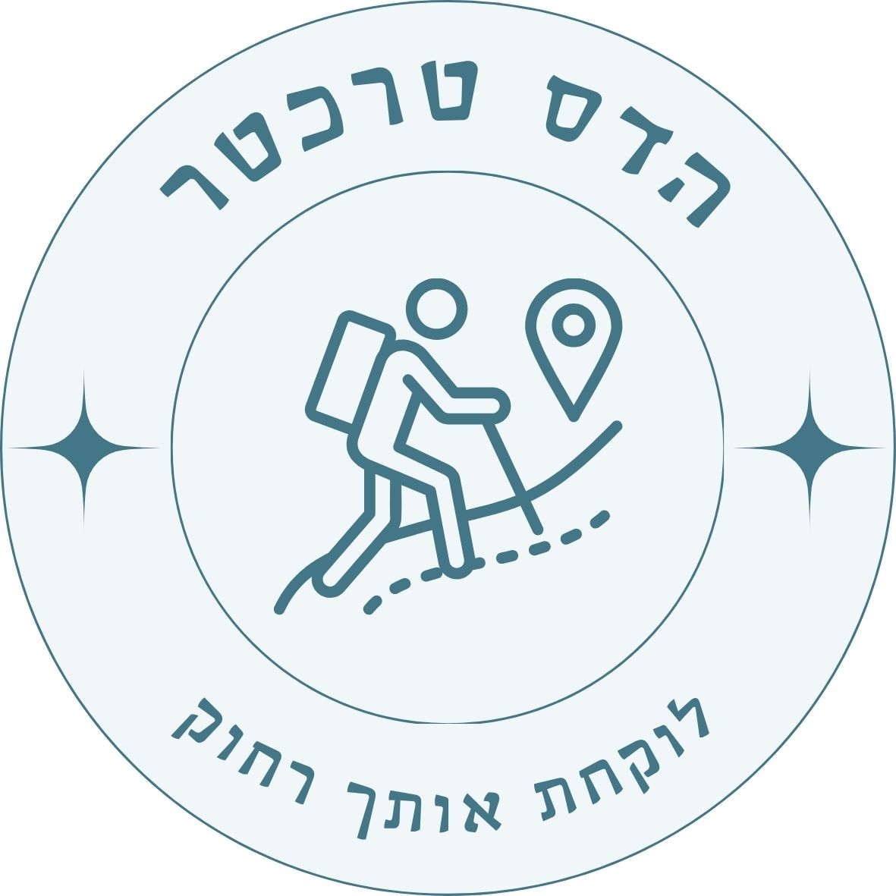

| פעילות | הערה | עלות משוערת |
|---|---|---|
| השכרת אופניים (חצי שעה) | השערה / 6000 פורינט | 60 ₪ |
| שייט לילי בדנובה | הזמנה מראש | 50 ₪ |
| סיור הכרת העיר (פפריקה) | 30€ (מזומן) | 120 ₪ |
| כדור פורח (אופציונלי) | 100 ₪ | |
| סיור איזי ריידר | 50€ (מזומן) | 200 ₪ |
| הספרייה הלאומית | 20,000 פורינט | 200 ₪ |
| הגלגל הענק | 4,500 פורינט | 45 ₪ |
| סה"כ מוערך לאדם (לא כולל ספרייה וכדור פורח) | ~475 ₪ | |
| סה"כ מוערך לזוג | ~950 ₪ | |